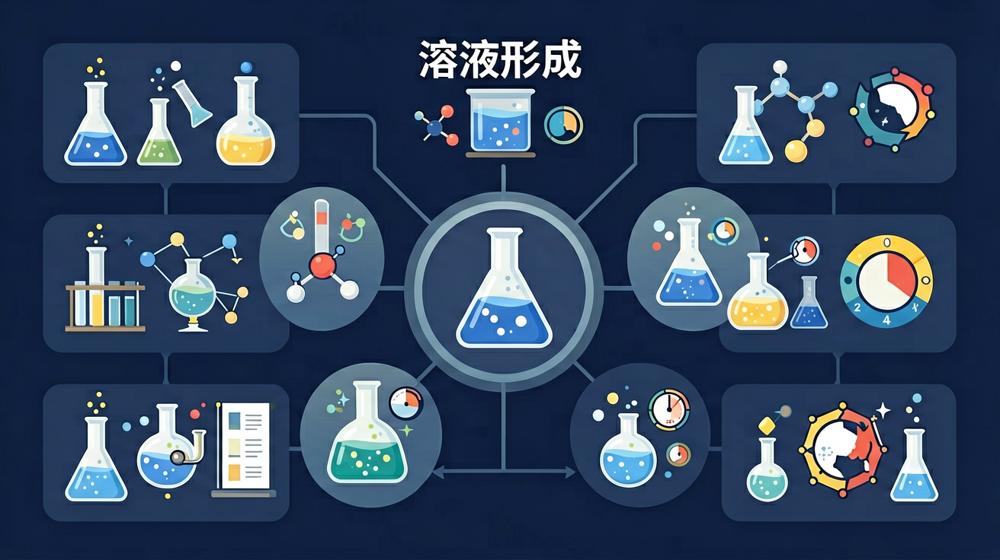
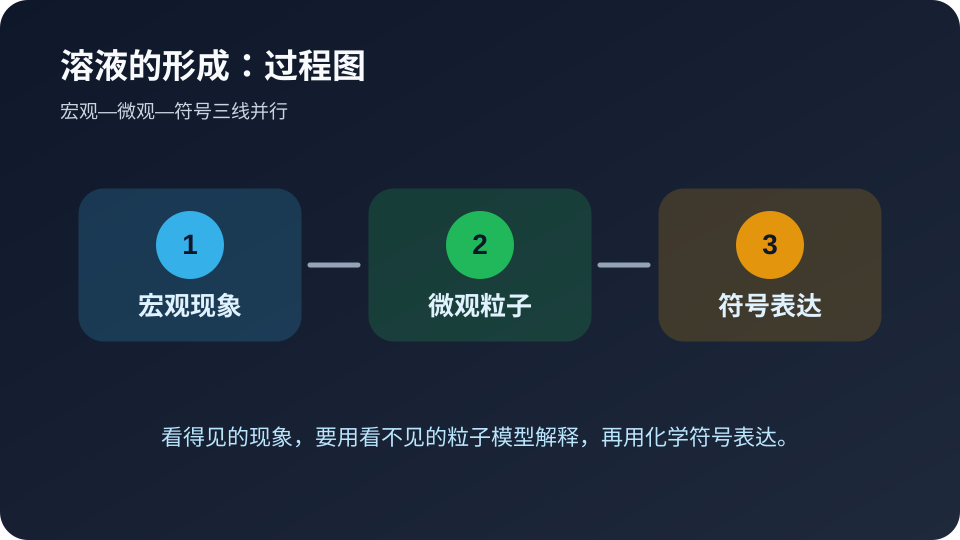
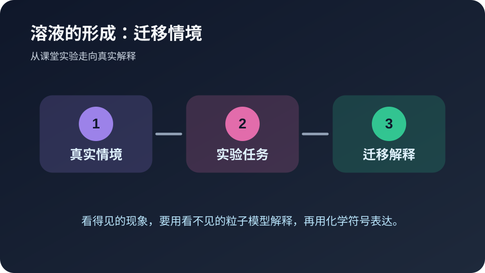

🎯 学习目标
- 能用自己的话解释溶液的形成的核心含义
- 能把溶液的形成和实验现象、微观粒子或化学符号联系起来
- 能识别溶液的形成相关的常见错误并完成迁移题
今天先解决溶液的形成里的哪个问题？
选择后，AI 学伴会围绕你的卡点给提示。
🧭 带着问题学
❓ 为什么糖水放久了糖不会沉底？
❓ 雪碧冒的气泡是溶解的气体吗？
❓ 洗衣粉倒进水里怎么就消失了？
学完这一课，这些问题你都能自信地回答。
📝 前测：你已经知道什么？
下面哪种学习方式最符合化学学科特点？
🔍 核心讲解：溶液的形成 的专属解释
食盐放入水中消失但并没有消失，而是形成均一稳定的混合物。
溶液由溶质和溶剂组成，具有均一性和稳定性。
证据来自各处浓度相同、静置不分层和蒸发后可得到溶质。
深层理解：看见它是具体实验现象；拆开它要看 溶质种类、溶剂种类、温度和搅拌；解释它要说明为什么；比较它要避开易错点；迁移它要换到新情境。
🧩 过程图：从现象到解释

看见现象只是第一步。真正的化学解释，需要把“颜色、气体、沉淀、温度”等宏观线索，转译成“粒子种类、粒子数目、粒子间作用或重新组合”等微观语言，最后再落到符号表达。
🎛️ Canvas 真实互动：微观解释模拟器
拖动滑块，观察 溶质种类、溶剂种类、温度和搅拌 如何影响结果。
🧭 诊断实验室：判断解释是否合格
请用三条标准评价自己的答案：第一，是否说清了观察到的现象，而不是只写结论；第二，是否把现象背后的微观粒子、物质类别或反应规律讲出来；第三，是否能用符号、关键词或简图表达。若三条里少任何一条，说明对溶液的形成的理解还不够稳。
教师可以让学生两两互评：一人读解释，另一人只问“你看到的证据是什么”“微观层面发生了什么”“如果换个条件还成立吗”。这三个追问能快速暴露死记硬背的问题，也能把课堂讨论从答案对错推进到证据和推理。
🔬 探究影响溶解速率的因素
设计实验比较颗粒大小、温度、搅拌对食盐溶解速率的影响
🔬 微观探秘：溶质分子去哪儿了？
咱们都知道糖放进水里会消失，但你想过这些糖分子到底经历了什么吗？说白了，溶解就像一场微观世界的捉迷藏！水分子是热情的"主人"，它们用带负电的氧端和带正电的氢端把溶质分子团团围住（这叫水合作用）。比如食盐溶解时，钠离子被氧端包围，氯离子被氢端包围，就像被一群小朋友手拉手拽开。你想想看，要是用油代替水，因为油分子不带电极性，根本拆不散食盐晶体，这就是"相似相溶"原理——极性物质易溶于极性溶剂。
生活实例：医院用的酒精消毒液必须配成75%浓度，纯酒精反而效果差。因为病毒蛋白质外壳是极性分子，需要适量水分子帮忙打开蛋白质结构，酒精才能渗透进去破坏它。这就是为什么用纯酒精擦手时感觉"干得快但消毒不彻底"。
🌍 溶液改变世界：从炼丹术到锂电池
知道吗？古代道士炼丹用的"金液"其实就是硝酸溶解黄金形成的溶液！溶液技术推动着人类文明：17世纪荷兰人用氯化汞溶液给木材防腐，造出能环球航行的商船；现在你手机里的锂电池，正极材料要靠溶液法合成。最酷的是生物体内的溶液——血液含有Na⁺、K⁺等50多种离子，浓度差产生神经电信号。你想想，要是没有溶液这种均匀混合的特性，这些科技和生命活动根本不可能实现。
生活实例：运动饮料包装上总写着"电解质配方"，其实就是把钠、钾、镁等变成离子溶液。当你大量出汗时，喝这个比喝纯水更快补充流失的矿物质，防止肌肉抽筋。下次体育课带的水加点食盐和柠檬汁，就是简易版电解质溶液哦！
📘 核心概念模块：先把溶液的形成说清楚
溶液由溶质和溶剂组成，具有均一性和稳定性。
这个模块只属于溶液的形成，因为它的关键证据是：证据来自各处浓度相同、静置不分层和蒸发后可得到溶质。 本课把学习任务拆成三步：识别现象、说明机制、用符号或数据完成解释。
🧪 例题示范模块：用溶液的形成解释一道题
情境：泥水不是溶液，因为静置会分层；食盐水是溶液。
作答路径：先写现象，再写与溶液的形成相关的机制，最后写证据或条件。不要只写结论，要写出“因为……所以……”的推理链。
🔍 深层理解：五镜头
🔧拆开它
溶质分子分散到溶剂分子间隙中
💡解释它
溶解是溶质微粒均匀扩散到溶剂中的物理过程
⚖️比较它
溶液不同于悬浊液（如泥水）和乳浊液（如牛奶）
👁️看见它
高锰酸钾溶解演示紫红色扩散现象
🚀迁移它
解释鱼缸增氧泵如何加速氧气溶解
🚀 迁移任务模块：自己设计一个解释

请用溶液的形成解释一个生活或实验情境，写出现象、微观/符号解释和条件变化后的结果。
📝 真题练习
先独立作答，再点选项查看对错与错因。
选择题 1
下列现象能说明白糖在水中溶解的是
选择题 2
用温水溶解白糖更快的主要原因是
选择题 3
柠檬片不能形成溶液的根本原因是
填空题 1
将少量植物油加入水中，振荡后形成____，静置后会____。
查看答案与解析
答案：乳浊液,分层
乳浊液是不稳定混合物
填空题 2
氯化钠溶解时，____键断裂形成自由移动的____。
查看答案与解析
答案：离子,钠离子和氯离子
离子化合物溶解的微观过程
✅ 后测：学会了吗？
⭐ 基础巩固：溶液的形成最重要的学习路径是什么？
⭐⭐ 能力应用：请用生活或实验场景解释溶液的形成。
⭐⭐⭐ 迁移挑战：设计一个小实验或判断题，验证你是否真正理解。
🎯 ConcepTest 检查点：暴露一个常见误区
判断题：只要能说出溶液的形成的名称，就说明已经理解这个知识点。这个说法对吗？请先独立判断，再说明理由。正确思路是：名称只是入口，理解必须能解释现象、区分相近概念，并在新情境中迁移。
错因诊断：很多同学把“背过”误认为“会用”。遇到综合题时，一旦题目换成实验装置、生活材料或数据图表，就容易失分。解决办法是每学一个概念，都配一个现象、一个微观解释和一个符号表达。
⚠️ 常见错误与错因诊断
把所有液体混合物都叫溶液。
只看表面现象，没写 溶质种类、溶剂种类、温度和搅拌 中的关键条件。
现象要具体，机制要对应，证据要能检验。
⚠️ 易错点诊所
❌ 认为溶解是化学变化
✅ 溶解是物理变化（如糖水蒸发得回糖）
💡 混淆溶解与化学反应
❌ 把有色溶液当悬浊液
✅ 有色溶液透光均匀（如硫酸铜溶液）
💡 忽视'均一性'判断标准
含错因
3. 解「溶液的形成」类题时，常见错因是
4. 若结果不合理，你应该
📌 本课小结：把溶液的形成装进长期记忆
今天的关键不是记住一段固定话术，而是能用溶液的形成解释具体证据。遇到新题时，先找现象，再找 溶质种类、溶剂种类、温度和搅拌，最后写出机制与证据。
课后任务：把本课的情境换成你熟悉的生活或实验材料，再写一道带错因诊断的选择题。